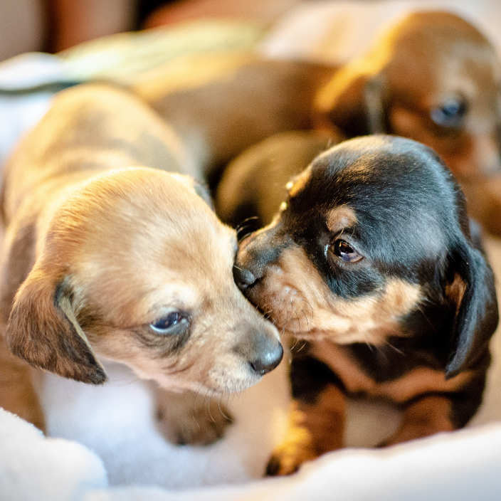
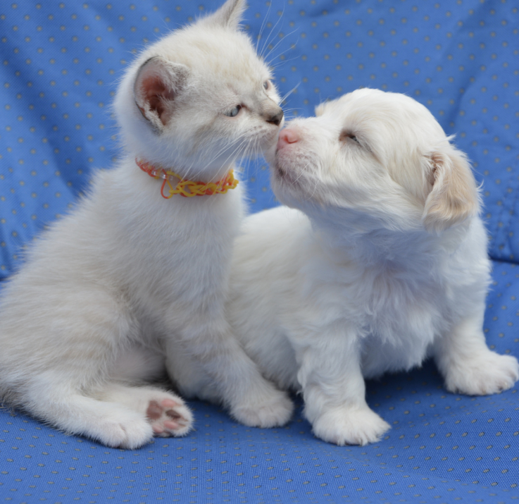
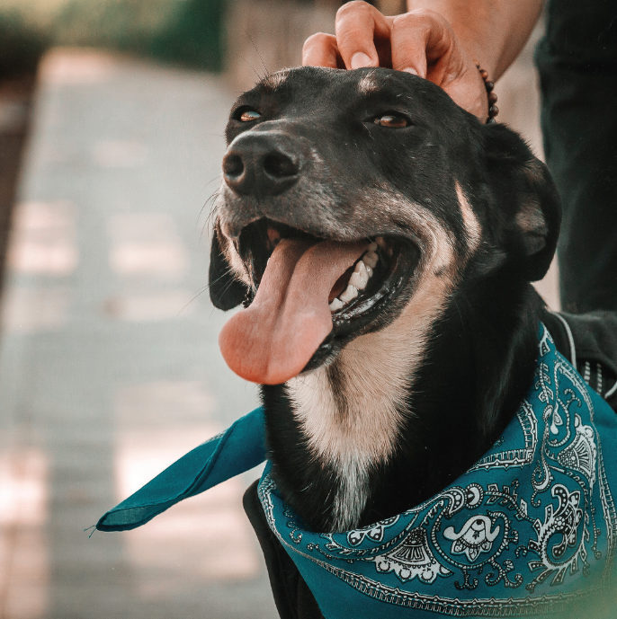

Tudo começou em fevereiro de 2019, quando uma simples caixa de papelão
foi deixada na porta de casa. Dentro dela, encolhido e assustado, estava
um filhotinho de cachorro abandonado. Demos a ele o nome de Lupi, e foi ele
quem mudou tudo.
Na época, Aline era apenas uma pessoa apaixonada por animais, mas a chegada
de Lupi fez nascer a vontade de poder ajudar cada vez mais animais. Lupi foi
o primeiro resgatado, mas logo vieram outros cães, gatos e até coelhinhos que
precisavam de carinho, cuidado e um lar temporário.

E nesse movimento de acolhimento, cuidado e aprendizado que nasceu a
Pets Lovers. Mais do que um petshop, criamos um espaço de amor, onde
os animais são tratados como parte da família, com respeito, atenção e
muito carinho.
Começamos com uma pequena lojinha no centro de Marília, com poucos produtos
mas muito amor envolvido. A cada cliente que chegava com seu bichinho no
colo, nos sentíamos ainda mais no caminho certo. Aos poucos, fomos
crescendo, trazendo mais produtos de qualidade, serviços especializados
e uma equipe apaixonada por cuidar.

Hoje, o Pets Lovers é referência não apenas pela variedade,
mas pela forma como acolhemos cada pet com o mesmo amor que
acolhemos o Lupi lá no início. E é por ele, e por todos os animais
que ainda precisam de nós, que seguimos firmes nesse propósito.
